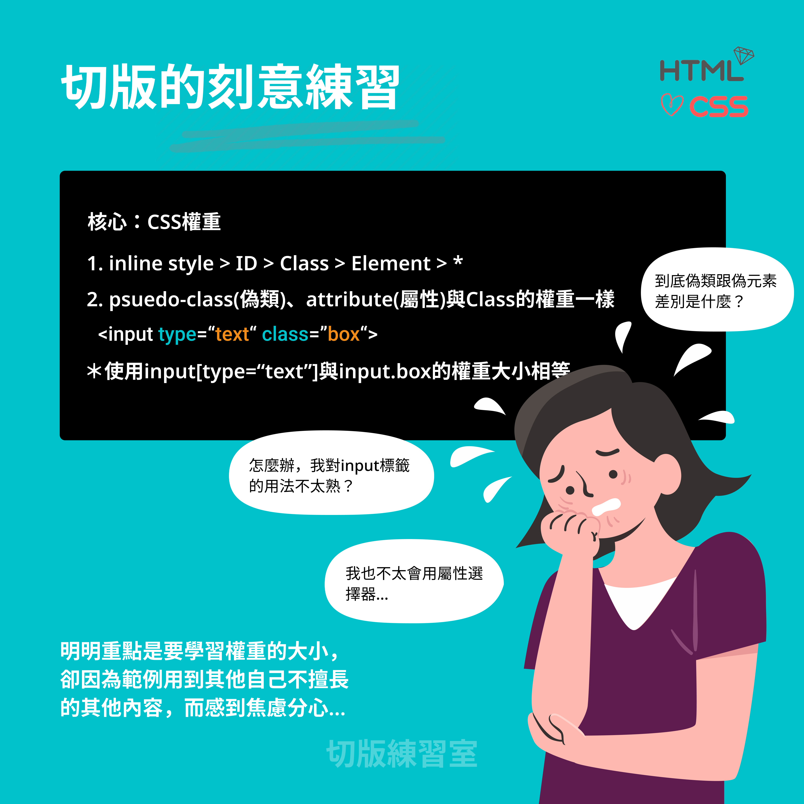

“天才與庸才之間的差別不在基因、不在天分，在「刻意練習」！”
切版的刻意練習
練習一定可以提高經驗值，用「對的方式」練習更能夠事半功倍。如果要有效的學習切版，就必須用刻意練習的方法。在此歸納刻意練習的三個重點，設定目標、專注、意見回饋。① 首先，設定目標是非常重要的，但切勿好高騖遠！
有目標的學習方法，能促使自己持續地增進技能和填補不足，但如果沒有制定目標就很容易會東學一點、西學一點，卻無法有系統性且穩定的成長。 然而，我們可以嚮往自己未來成為切版方面的大師，也要明白無法一步登天這個道理。所以一開始不要設定過於遠大的目標，因為無法在短期內達成會帶來失落和挫敗感，反而在過程中因為灰心而無法繼續前進。 我常常看到學生剛開始學習切版時，連基本Html標籤跟CSS屬性的用法都不太熟練，就妄想要開始練習一個完整頁面的切版，這樣做是難以成長的！因為一個頁面當中需瞭解的觀念非常多，在沒有基礎的情況下就直接去做，反而會帶來反效果。 應該要由小到大漸進性有目標的學習，才能從基礎開始並確實扎根，因此，有智慧且合理的訂下學習計畫吧！
② 專注，指的是一次只專心做好一件事
很多人並不是缺乏積極、學習的心，但卻因為急於求成，所以只要看到不懂的東西，就瘋狂搜尋資料，，但都無法扎下根基。 現代因網路發達，方便隨時隨地使用智慧型手機上網，所以大多數的人都有「一遇到問題就上網google一下」的習慣。但也因為資訊時代，可以獲得資訊的管道和方法太多，一次就得到超出預期的資訊量，讓許多人有了「資訊焦慮症」。 我也觀察到有很多學生，在練習範例時，明明是要學習「CSS的權重」觀念，他卻因為看到題目上有範例提到他不太瞭解的內容，就急於去了解它，反而本末倒置，沒有將該學的東西學起來。
每次訂下一個小目標，例如，今天想要好好學習flexbox的用法，那就確實、專注地把它搞懂，而不要同時又想看看Grid有什麼差別、又要研究CSS選擇器有哪些，到頭來沒有一件事情搞清楚。 所以，在進入切版練習室之前，請大家務必丟掉雜亂的想法，按部就班的把基礎打好，才能扎實的往下一個階段邁進。
③ 想要寫出好的樣式，就要多參考意見回饋
我認為所謂的意見回饋，並非是指別人針對你的程式碼給予評論，因為我們無法期待有人能夠無條件給我們協助。但我們自己可以透過參考別人撰寫的程式碼，來學習更好的作法。 例如，可以到codepen上去看看有沒有其他人寫過同樣的內容，他的寫法和思考方式是什麼？跟自己的對比，是否更好？或者有哪些可以參考的，自己沒有嘗試過的方法？ 在切版這件事上沒有絕對標準的答案，但多參考其他人的寫法也有助於我們切版時的想法更靈活。
以上為切版練習的方法，提供想要精進切版實力的人參考。 如具備扎實的切版實力，在各式網站開發的過程中，就等於擁有了好的開始，如同把房子建立在磐石上一般。